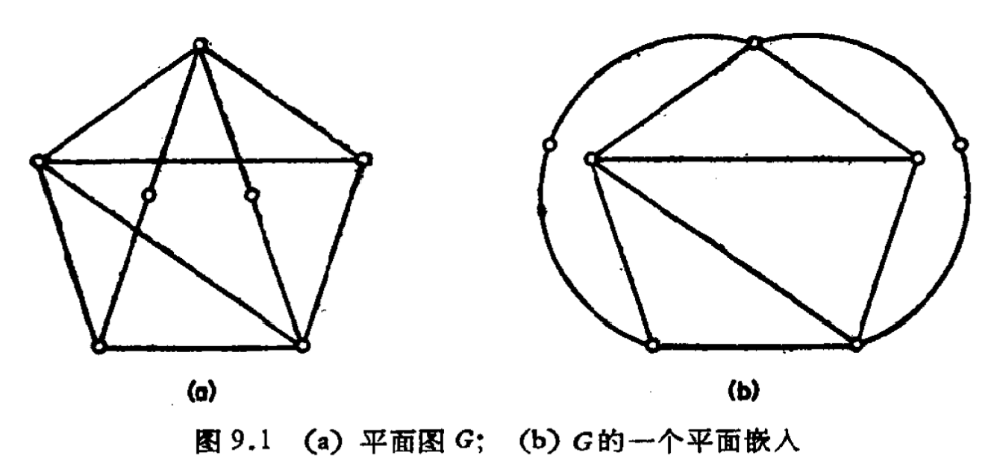

一、定义
- 如果一个图能画在平面上使得它的边仅在端点相交，则称这个图为可嵌人平面的，或称为平面图。平面图G的这样一种画法称为G的一个平面嵌人。

# 二、判断方法 ## 2.1 一些拓展内容 > 一条 Jordan 曲线是指一条连续的、自身不相交的、起点和终点相重合的曲线，平图的圈中各条边的并集构成一条 Jordan。 > > 设\(J\)是平面上的一条 Jordan 曲线，平面的剩下部分被分成两个不相交的开集，称为\(J\)的内部和外部，分别记为\(intJ\)和\(extJ\)，并且用 \(IntJ\)和\(ExtJ\)表示它们的闭包．显然\(IntJ \cap ExtJ=J\)。 > > Jordan曲线定理：连接\(intJ\)的点和\(extJ\)的点的任何连线必在某点和\(J\)相交。